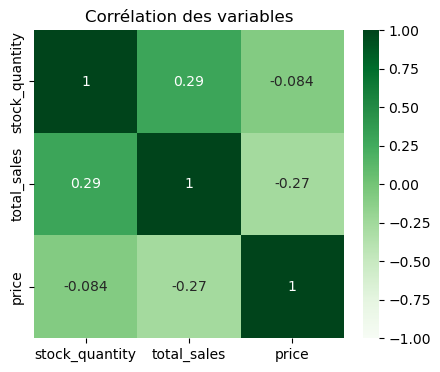
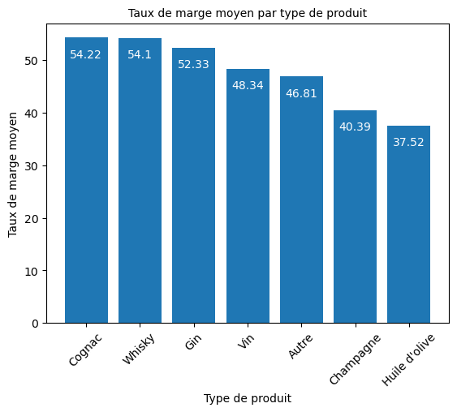

- 154 798 €de chiffre d'affaires reconstitué
- 36articles au prix atypique, soit 4,4 %
- 2 338lignes issues de deux systèmes distincts
01 Contexte & besoin métier
Un caviste en ligne veut savoir quels produits sont vraiment rentables. Pour y répondre, il faut croiser deux systèmes.
L'ERP connaît les prix d'achat, les prix de vente et les stocks ; le site marchand connaît les ventes et les pages produit. Les deux utilisent des identifiants différents, ce qui empêche de relier ce qu'un produit rapporte à ce qu'il coûte.
Trois questions concrètes : quel est le chiffre d'affaires réel par produit, quels articles se vendent à perte, et quels articles immobilisent du stock sans tourner.
02 Données
Trois fichiers Excel, de structures très inégales :
| Fichier | Rôle | Colonnes | Lignes |
|---|---|---|---|
| ERP | Prix, stocks, statut de stock | 6 | 825 |
| Site marchand | Ventes et fiches produit | 29 | 1 513 |
| Table de liaison | Correspondance des identifiants | 2 | 825 |
Qualité et limites
- Volumes incohérents entre les deux systèmes : 825 références côté ERP contre 1 513 côté web. L'écart devait être expliqué avant toute jointure.
- Doublons d'identifiants produit dans les deux sources.
- Stocks incohérents : des articles déclarés en rupture affichaient une quantité positive, et inversement.
- Aucune dimension temporelle exploitable : l'analyse donne une photographie à une date, sans tendance.
03 Démarche
-
Explorer chaque source séparément avant de les croiser
Structure, types, valeurs manquantes et doublons ont été examinés fichier par fichier, avant toute tentative de rapprochement.
Pourquoi ce choix
Si l'on fait la jointure avant de nettoyer les fichiers, les doublons se multiplient et on ne sait plus de quel fichier vient une erreur. Nettoyer chaque fichier d'abord permet de retrouver l'origine de chaque ligne.
-
Arbitrer sur les incohérences de stock
Deux traitements distincts : suppression des lignes aberrantes sur le prix, et remise à zéro des quantités contredisant le statut de stock déclaré.
Pourquoi deux traitements différents
Un prix aberrant est probablement une erreur de saisie et n'a pas de valeur corrigeable. Une quantité en contradiction avec son statut, en revanche, relève d'un arbitrage : le statut a été considéré comme la source de vérité, parce qu'il est mis à jour par le processus logistique, alors que la quantité peut rester figée après un mouvement non enregistré.
-
Enchaîner deux jointures
D'abord une jointure entre l'ERP et la table de liaison, qui garde tous les produits de l'ERP (jointure à gauche). Puis une jointure avec les données du site, qui garde aussi les produits présents d'un seul côté (jointure externe).
Pourquoi ce choix
La première jointure garde tous les produits de l'ERP. La seconde fait apparaître deux anomalies : des produits en stock jamais mis en ligne, et des produits vendus en ligne absents de l'ERP. Une jointure interne les aurait fait disparaître sans le signaler.
-
Examiner les prix atypiques sans les supprimer d'office
Analyse univariée du prix par boîte à moustaches et par histogramme. Le seuil interquartile haut s'établit à 83,3 €, au-delà duquel se situent 36 articles, soit 4,4 % du catalogue.
Pourquoi ne pas les écarter
Chez un caviste, un prix élevé n'est pas une anomalie mais un positionnement. Les 36 articles concernés sont vraisemblablement des grands crus ou des spiritueux de garde, qui font le cœur de la marge. Les traiter comme des valeurs aberrantes statistiques aurait supprimé les produits les plus rentables de l'analyse.
Le seuil interquartile a donc servi à identifier un segment à examiner, pas à filtrer. La règle statistique signale, le métier tranche.
-
Calculer les indicateurs de performance et leurs liens
Chiffre d'affaires par produit, taux de marge, rotation de stock, puis étude des corrélations entre prix, ventes et quantités détenues.

04 Résultats & impact
Chiffre d'affaires total reconstitué : 154 798,40 €. Surtout, le rapprochement a rendu visibles deux catégories de produits jusque-là invisibles : ceux vendus à marge négative, et ceux qui immobilisent du stock sans tourner.

Constats
- La hiérarchie des marges ne recoupe pas celle des volumes. Les familles les plus rentables ne sont pas les plus vendues : arbitrer sur le seul chiffre d'affaires conduirait à mettre en avant les mauvais produits.
- Des produits à marge négative ont été identifiés : vendus en dessous de leur coût d'acquisition, ils détruisent de la valeur à chaque vente.
- Des produits en surstock immobilisent de la trésorerie : un coût réel, mais qui n'apparaît dans aucun compte de résultat.
- 36 articles au-dessus de 83,3 € constituent un segment premium distinct, à piloter séparément du reste du catalogue.
Recommandations
- Traiter les produits à marge négative en priorité : renégocier l'achat, relever le prix, ou sortir la référence. C'est l'action au retour le plus immédiat.
- Déstocker les références sans rotation, même à marge réduite : le capital immobilisé coûte plus cher que la remise consentie.
- Mettre en avant les spiritueux dans les recommandations du site, où chaque vente rapporte structurellement davantage.
- Corriger les identifiants à la source. La divergence ERP / site est un problème de processus ; le rapprochement analytique ne fait que le contourner.
05 Limites & prochaines pistes
Pas de distinction temporelle, impossibilité de distinguer un produit en déclin d'un produit saisonnier. Un champagne qui ne tourne pas en avril n'est pas un produit mort.
Les corrélations observées restent faibles. Aucune ne dépasse 0,29 en valeur absolue : les leviers de la performance produit sont ailleurs que dans ces trois variables, par exemple la notoriété, le référencement ou la visibilité sur le site.
Le taux de marge ignore les coûts indirects : stockage, logistique, casse. La rentabilité réelle des produits fragiles ou volumineux est donc surestimée.
Prochaines pistes
- Reconduire l'analyse sur plusieurs mois pour distinguer saisonnalité et déclin réel.
- Intégrer les coûts logistiques pour passer d'un taux de marge brut à une marge contributive.
- Croiser avec les données de trafic des fiches produit, pour séparer un produit qui ne plaît pas d'un produit que personne ne voit.
- Automatiser le rapprochement pour en faire un indicateur de suivi plutôt qu'une étude ponctuelle.
06 Version améliorée (2026)
Ce projet a été repris en 2026 pour fiabiliser les données et automatiser les contrôles de cohérence, jusque-là réalisés manuellement. La veille menée pour cette reprise (outils d'analyse exploratoire comparés, évolutions de Pandas 3.0) est présentée sur la page Veille.
La nouvelle version corrige plusieurs chiffres de cette page :
- Chiffre d'affaires : 143 680 € au lieu de 154 798 €. Tout l'écart vient des ventes comptées deux fois : 4 produits aux ventes gonflées (10 943 €) et un bon cadeau (175 €).
- Corrélation entre prix et ventes : −0,52 au lieu de −0,27, une fois ces ventes corrigées.
- Prix négatifs : 3 signes corrigés, au lieu de supprimer les 3 produits.